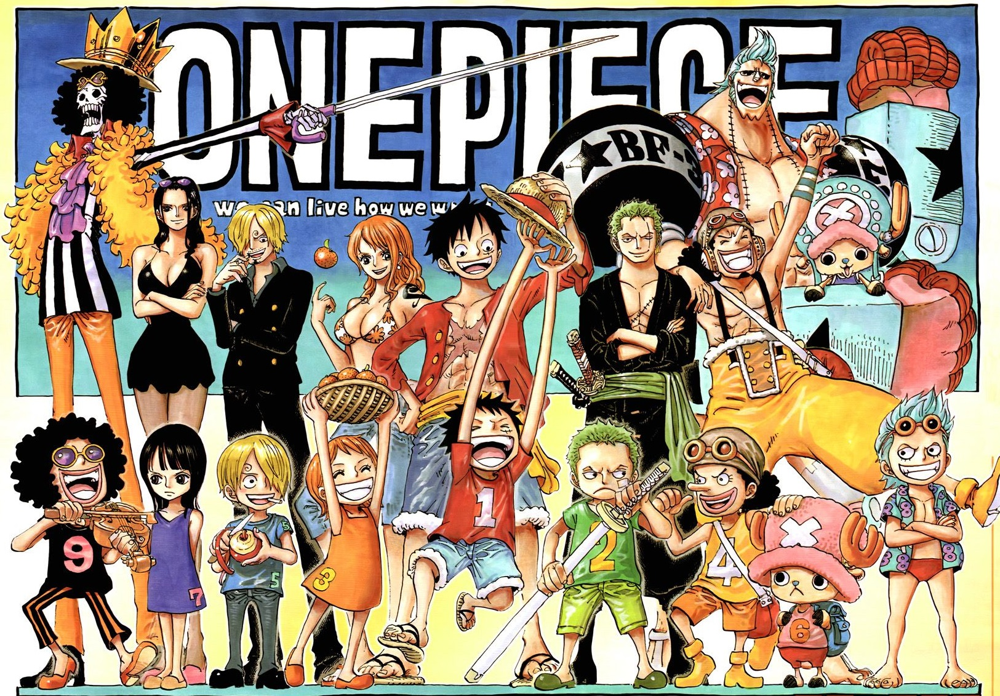

One Piece (ワンピース Wan Pīsu?) é uma série de mangá escrita e ilustrada por Eiichiro Oda. Os capítulos têm sido serializados na revista Weekly Shōnen Jump desde 22 de julho de 1997, com os capítulos compilados e publicados em 98 volumes tankōbon pela editora Shueisha até fevereiro de 2021. One Piece conta as aventuras de Monkey D. Luffy, um jovem cujo corpo ganhou as propriedades de borracha após ter comido uma fruta do diabo acidentalmente. Com sua tripulação, os Piratas do Chapéu de Palha, Luffy explora a Grand Line em busca do tesouro mais procurado do mundo, o "One Piece", a fim de se tornar o próximo Rei dos Piratas. O mangá foi adaptado em um episódio OVA produzido pela Production I.G em 1998, e num anime produzido pela Toei Animation, transmitido no Japão desde 1999. Além disso, a Toei Animation produziu catorze filmes de anime, um OVA e treze episódios especiais de televisão. Foram lançadas também vários tipos de mídias desenvolvidas por diversas empresas relacionadas à série, como um jogo de cartas colecionável, e vários jogos eletrônicos. A série de mangá é licenciada e publicada no Brasil pela editora Panini Comics. A série de anime já foi exibida no Brasil, e em Portugal. Atualmente a série é transmitida simultaneamente pela Crunchyroll no Brasil e será transmitida pelo Netflix com uma nova dublagem. One Piece recebeu elogios pelo seu enredo, arte, humor e caracterização. Vários volumes do mangá quebraram recordes de publicação, incluindo a maior tiragem inicial de qualquer livro no Japão. O sítio oficial da série anunciou que o mangá estabeleceu um recorde mundial como "a série de quadrinhos de um mesmo autor com mais cópias publicadas no mundo". Até maio de 2020, o mangá já tinha vendido mais de 473 milhões de cópias em todo o mundo, sendo a série de mangá mais vendida da história. Foi a série de mangá mais vendida pelo décimo primeiro ano consecutivo em 2018. One Piece é uma das franquias de mídia com maior bilheteria de todos os tempos, estima-se que tenha gerado mais de 21 bilhões de dólares em receita total de franquia, a partir de mangás, animes e filmes, jogos e mercadorias.
